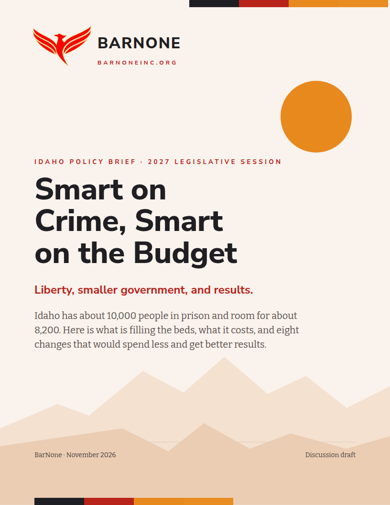

Research Brief No. 5 · Idaho
Smart on crime, smart on the budget: Idaho
Idaho prides itself on liberty and smaller government. Its prison system is the exception. About 10,000 people are in state custody, with beds for about 8,200. The overflow sits in county jails and out-of-state private prisons, and the Legislature is being asked for $45.3 million just to open new beds. This brief looks at what is filling the beds, what it costs, and eight changes that would spend less and get better results.
For how Idaho compares with its neighbors, see Brief No. 1, Similar violent crime, far more prison.
in Idaho Department of Correction custody, in a system at about 122% of capacity.
spent renting county jail and out-of-state beds in fiscal 2026. $59.5 million is budgeted for fiscal 2027.
in custody costs the first two changes alone could avoid, about 375 to 900 beds. Illustrative BarNone estimates from IDOC's own numbers.
The ask
Spend Idaho's money on what works, and give people their freedom back
In November, the Legislature's own watchdog, the Office of Performance Evaluations, showed what is filling Idaho's prison beds, but ran out of time and data to price it. This brief takes a first pass.
Much of the growth isn't new crime. It's people sent back for breaking the rules of supervision, people who stay past their parole eligibility date while they wait for a hearing, a class or a bed, and people held for drug possession.
Idaho controls every one of those levers. Changing them saves money without putting public safety at risk, and the savings are real only when the county jail and out-of-state budget line goes down.
The package
Eight changes
1
Stop sending people back to prison for technical violations alone
Use short, capped sanctions and overhaul supervision.
2
Release people when they become eligible
Not after a wait for a hearing, a class, or a bed in the right place.
3
Create Earned Home Reentry
Let people finish the end of their sentence at home, working and supervised, anywhere in Idaho.
4
Find out which programs work, and fund those
Measure results, not just completions.
5
Treat drug possession with treatment, not a felony
Follow Utah and Oklahoma, and keep parents with their kids.
6
Make medical parole work and add an elder parole review
The oldest and sickest cost the most and are the least likely to reoffend.
7
Simplify the criminal code and update the theft threshold
The $1,000 felony line hasn't moved since 1998.
8
Seal old records automatically
When a sentence is over, it should be over.
The numbers
What the first changes could save
Illustrative estimates of custody costs Idaho could avoid, from IDOC's public numbers. Not a budget score.
| Change | Beds | Custody costs avoided | After supervision |
|---|---|---|---|
| 1. Technical violations only | ~125 | ~$3.7M | ~$3.3M |
| 1. Plus probation and riders | 225 to 500 | $6.6M to $14.6M | $5.9M to $13M |
| 2. Scheduling delays | ~100 | ~$2.9M | ~$2.6M |
| 2. Grant rate back toward 70% | 150 to 400 | $4.4M to $11.7M | $3.9M to $10.4M |
| Changes 1 and 2 | 375 to 900 | $11M to $26M | $10M to $23M |
| 3. Earned Home Reentry | per 100 | ~$2.9M | ~$2.1M |
Each bed is worth about $29,200 a year, the $80-a-day county jail rate. Because Idaho will keep renting beds even after its new prisons open, the first beds freed are rented ones. "After supervision" subtracts $8.72 a day. Some people show up in more than one change, so rows shouldn't be added together blindly. Changes 4 through 8 need IDOC data BarNone is requesting.

The full brief
Read the 16-page brief
The full brief has the charts, the cost tables, the answers to the hardest objections, and every source. It is laid out to print on letter paper, or as a folded booklet on ledger paper.
Read with care
What this brief is, and isn't
- A discussion draft. This is a policy proposal for the 2027 session, not a fiscal note.
- Illustrative estimates. Savings are figured only for the first changes, from IDOC's public numbers. The rest need admissions and revocation data from IDOC, which we are requesting.
- Savings depend on budgets. Fewer people in custody saves money only when the county jail and out-of-state lines in the budget actually go down.
- How we stay nonpartisan. BarNone works with lawmakers of every party in Idaho, Washington, and Oregon. We use public data, publish our methods and sources, share findings with legislators and staff of both parties, and take corrections from anyone. We do not endorse candidates or parties.
Full sources are listed at the end of the PDF. Tell us if you spot something we should fix.
Suggested citation
BarNone. (2026). Smart on Crime, Smart on the Budget: Idaho (Research Brief No. 5). barnoneinc.org